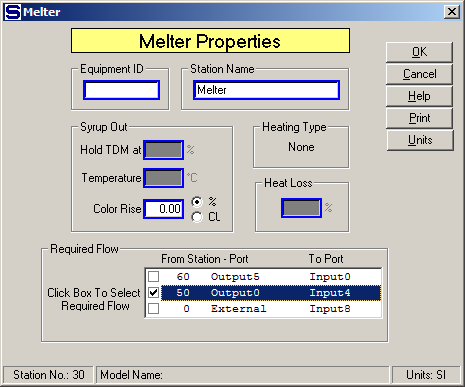

Equipment ID An equipment ID of up to 11 characters can be used to identify the station with an actual station in the process. Any combination of numbers and letters that are used in the factory/refinery to identify equipment can be entered. For example, Equipment ID = 123.456A. It is not necessary to make an entry in the Equipment ID field if the station in the model does not have a corresponding station in the factory/refinery.
Station Name A name of up to 20 characters must be entered for the station. For example, Station Name = High Melter.
Syrup Out Enter values for the syrup leaving the melter. A dry substance can be specified for the output flow if an input flow goes into port 9 and a temperature value can be specified for the output flow if a heating flow goes into port 10. The "Hold TDM at" and "Temperature" entry fields will be dimmed if input flows do not go to these ports.
Hold TDM at (%) The input flow going to port 9 will be adjusted by Sugars to give an output flow from the melter that has a total dry matter (total soluble and insoluble solids) content that is equal to the value entered. This field is active only if a flow stream goes to input port 9 (the input flow located on the side of the melter). If a value is not entered, the input flow into port 9 is handled the same as any other flow into port numbers 0 through 8. That is, enter 0.00% if the flow into port 9 is not being used to control the output flow to a %TDM, or enter a value > 0.00 if the flow into port 9 is being used to control the output flow to a %TDM. For example, Hold TDM at = 67.00%.
Temperature Enter the temperature of the output flow from the melter. The heating flow into the melter will be required and the quantity of flow will be adjusted to give the specified output flow temperature. For example, Output Flow Temperature = 92.0°C.
Color Rise Enter a color rise that occurs in the melter. The color rise can be specified as either a % increase, or an absolute increase of a specified amount of color units. For example, Color Rise = 5.0%, or Color Rise = 150 ICU color units of increase.
Heating Type The heating type will be either injection, or coil. All of the heating flow is added to the process flow out of the melter when an injection-heated melter is used. All of the heating flow leaves as condensate when a coil-heated melter is used. The shape selected from the stencil determines the type of heating.
Heat Loss (%) Enter the Heat Loss in percent (%) for the heat that is lost in the melter station. The heat loss is the percentage loss of heat from the total heat that is transferred to the process flow from the heating flow. For example, Heat Loss (%) = 1.0 (to give 1% heat loss).
A box labeled "Required Flow" will appear on the Melter Properties window if the output flow from the melter is required (see below). All of the flows into the melter that can be made required will be shown in this box. In some cases, there may be input flows from other stations that go into the melter that cannot be made required and these flows will not be shown. The box will not be shown if there is only one input flow or only one of the input flows can be made required. Select the input flow that is to be used by Sugars to satisfy the output flow. That is, Sugars will calculate the total quantity of all other input flows and then adjust the quantity of the input flow that was selected to be required to satisfy the quantity of the output flow.
